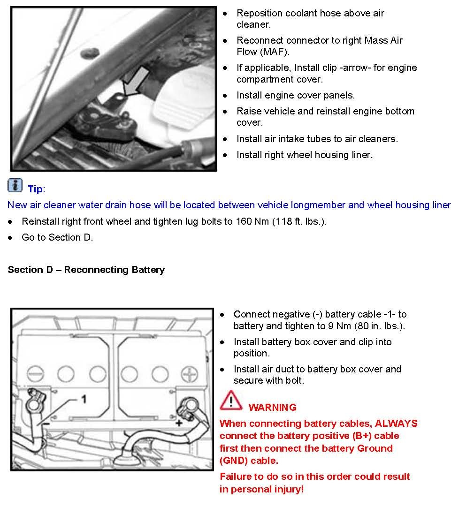
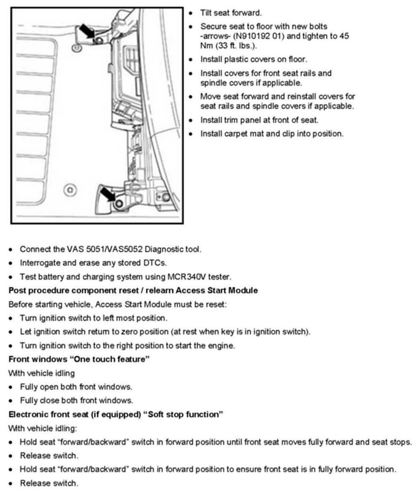
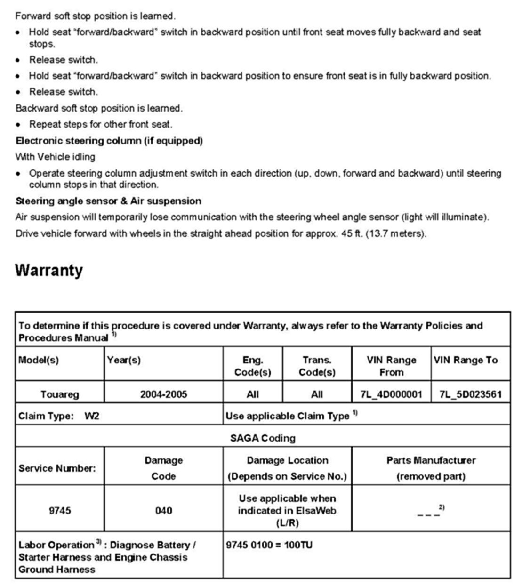
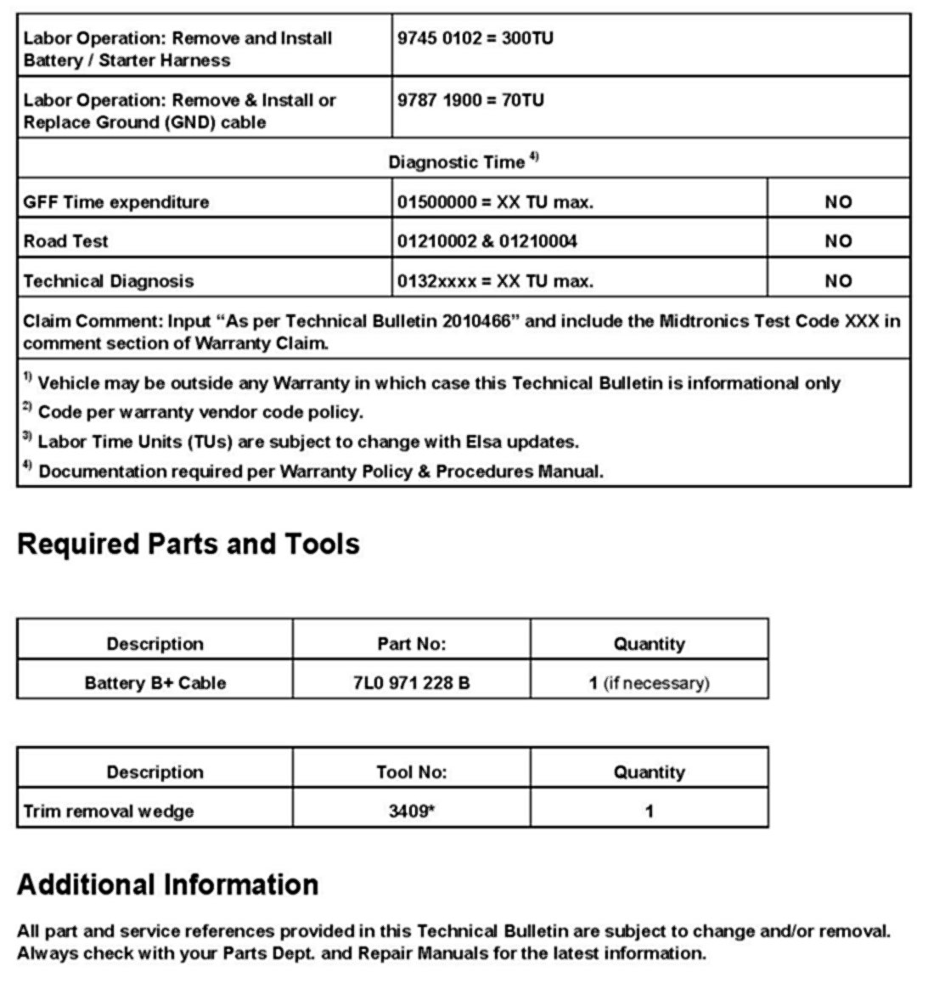

LEMON Manuals
: Even more car manuals for everyone: 1960-2025
Home
>>
Volkswagen
>>
2004
>>
Touareg (7LA) V6-3.2L (BAA)
>>
Repair and Diagnosis
>>
Starting and Charging
>>
Battery
>>
Technical Service Bulletins
>>
All Technical Service Bulletins
>>
Electrical - No Crank/No Start/Can't Remove Key
>>
Service Section D, Warranty Information, Parts, Tools Additional Info.
Service Section D, Warranty Information, Parts, Tools Additional Info.



